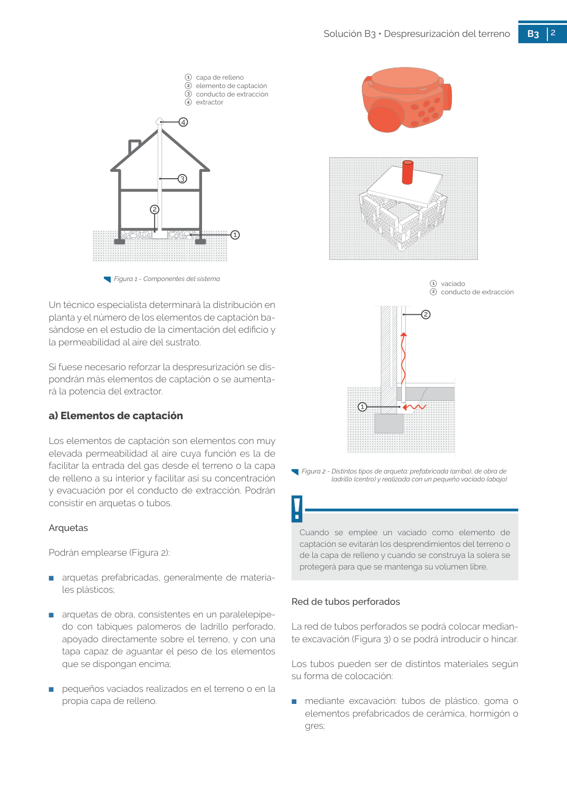

GUIA · 3 conducto de extracción 4 extractor · versión sin-fecha · capa guia
Formatos: JSON compacto · Markdown · PDF fuente
Ámbito del documento · texto del ámbito · documento y tablas
Tipo: tablas, figuras · nivel 1 · sección estimada: 3 conducto de extracción 4 extractor · padre:
3 conducto de extracción 4 extractor 4 extractor Figura 1 - Componentes del sistema Un técnico especialista determinará la distribución en planta y el número de los elementos de captación ba sándose en el estudio de la cimentación del edificio y la permeabilidad al aire del sustrato. Si fuese necesario reforzar la despresurización se dis pondrán más elementos de captación o se aumenta rá la potencia del extractor.

PDF fuente redistribuible: copia fiel enlazada en esta página (SHA256 verificado).